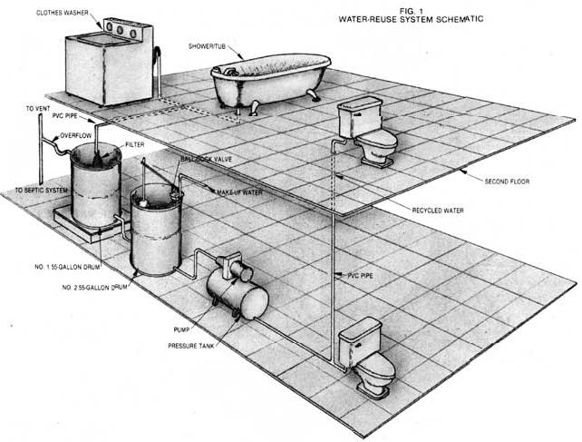
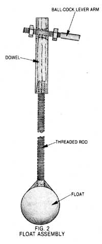
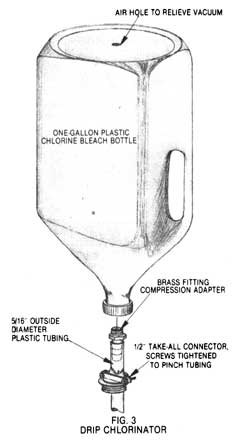

If you're looking for ways to save water, these upstate New Yorkers can tell you how to...
I like rural living; it really has its pluses. But five-second showers, trekking eight miles to the nearest Laundromat to do the family wash, and flushing only once a day are not on my list of ten reasons why I chose the country life. So two years ago, when the experts at a nearby university predicted a decade of drought, and the water level in our well failed to recover with the winter snows and spring rains, my engineer husband and I started looking for ways to painlessly cut down on our water usage.
We really didn't have to look very far. Both of us remembered reading about a water-reuse system when we were planning and designing our energy-efficient home two years earlier. At the time, we decided not to design our house around that setup, but it did strike us as a very practical way to save water.
The report we recalled was by the National Aeronautics and Space Administration (NASA) on its Technology Utilization House constructed at Langley Research Center in Hampton, Virginia. (The publication's title is Technical Support Package for Tech Brief LAR-12134.) The NASA engineers had come up with a way of recycling gray water -waste water from the shower, bathtub, bathroom sinks, and laundry-and using it to flush toilets. Instead of letting the water from these fixtures run down the drainpipes into the septic tank or sewer system, the NASA staffers collected it in a tank, chlorinated and filtered it, and then pumped the recycled water back to the toilets. The engineers figured that this system used in combination with water-saving toilets and shower heads would reduce a family of four's water consumption by 50%.
DECISIONS, DECISIONS
With the basic system requirements from the NASA paper in mind, we set out to design an economical water-recycling setup for our home. Our dwelling is unique, but to help you visualize the interior I'll call it a raised ranch house. On the lower level are the garage and a semifinished living area that includes a bedroom, a half bath, the family room, and the utility room. Upstairs, in our main living quarters, we have two bedrooms, the kitchen, the living/dining room, and a combination bath and laundry. I call the downstairs semifinished because our family room doesn't have a finished ceiling-all the pipes and wires are exposed. This, we knew, would make plumbing changes much easier.
We were determined to build a system that would be both inexpensive to install and easy to maintain, To those ends, we decided that all drains should gravity-feed into the recycling tank. Otherwise, we might have had to add expensive pumps that would have boosted our electric bill. Of course, the gravity-feed requirement ruled out using water from the first-floor bathroom sink, since there was no practical way to locate the storage system below the ground floor.
A survey of the drain lines showed that they all run between ceiling joists over the family room to the family-room/garage common wall, where they make a right-angle turn and converge into an exposed, vertical pipe. This main drain travels under the floor of the house and garage to the septic system. The upstairs bathroom sink is adjacent to the toilet, and the drains from those two fixtures are connected. Only a small amount of water goes down that sink (compared to the washing machine or tub), so it didn't make sense to go to the trouble of cutting and rerouting its drain. But it certainly did make sense to tap the tub and washer drains, and we had plenty of room at the garage wall to tie them together into a new pipe that would carry their water into a storage tank.
The next question was, How much water would we need to store? The NASA house has a 100-gallon, polyethylene collection tank, but spending better than $100 for a new vessel didn't agree with our budget. Instead, we thought in 55-gallon increments, which gave us the option of readily available used chemical drums. We located two of these polyethylene containers for very little money. They're ideally suited to the job, since they won't rust and are easily cut with a saber saw.
Because of the plumbing run locations, the garage appeared to be the perfect place for the drums. Using that site involved installing a minimum of new drain lines, which would save us money and time, and it also kept the system from intruding on our living space-we value every inch of that!
The final big hitch in our plan was finding an economical but quality pump to deliver the recycled water to the toilets. After combing the local advertising papers for a few weeks, we found a good, used shallow-well pump and pressure tank for $70.
SYSTEM DESIGN
Fig. 1 is a schematic of our water-recycling setup, a design that is very similar to the one we saw in the NASA report. The PVC drain lines for the tub and washer are connected and run into a vertical 2" line that passes through the bunghole (the original location for a pour spout) of the first collection drum and extends three inches into its interior.
To this three-inch extension, we attached a filter bag made from a polyester shirt sleeve. The sleeve is cut off at the shoulder and stitched closed with polyester thread at that end and along the cuff vent. The cuff slides over the 2" pipe and is held in place with a hose clamp. And, of course, the sacrificial shirt offered a spare filter for use when the other is being cleaned. By the way, we chose polyester because natural fibers can rot and are readily degraded by the bleach used to disinfect our gray water.
If you'll look once again at Fig. 1, you'll see an overflow drain connected to the primary drum. This 2" pipe is attached to a tank fitting located just below the lip of the drum. The overflow is fitted with a trap-all drain lines must have traps and appropriate vents to prevent the back ow of sewer gasses into the building-and runs into the main drain to the septic tank.
Near the bottom of the first tank, we placed another fitting. A flexible hose extends from this connection to a similar fitting in the bottom of the second drum. As you can see in the drawing, the first tank is elevated four inches above the second, which allows tank two to fill completely, forcing excess water out the overflow drain in tank one.
The second drum is also equipped with a tank fitting to accommodate the flexible suction line going to the pump (and to its attached pressure tank). From the pump, we ran 1/2" PVC pipe to both toilets, replacing the original household water supply lines. If you decide to install a water-reuse system, you should keep in mind that the gray water plumbing must be totally separate from the potable water fines, with no cross connections. It's a good idea to consult your local health department for more information about this regulation.
FLOOD OR DROUGHT
At any given time, the recycling system as discussed to this point can be in one of three modes: The tanks can be receiving too much water from the washer and tub, causing overflow into the septic system; they can contain enough water to supply the pump but not enough to overflow; or they can be empty, causing the pump to suck air and probably burn out.
To prevent the system from running dry, we designed a valve arrangement that brings clean water into the second tank when it's needed. We purchased a standard ball-cock valve (the type used in a toilet tank), which consists of a stem that draws water in the bottom, a valve which is opened or closed by a lever arm with a float, and two outlets. We chose a brass unit, bec ause it's mechanically stronger than the plastic ones on the market.
We anchored the ball cock to the garage wall above the second tank, with the inlet at the bottom and the lever extending out over the tank. To each outlet we attached a rubber hose' and the free ends were fastened just above the bunghole in the top of the tank. According to health codes, the hoses, which carry white water, must never touch the gray water.
The lever arm of the ball cock passes through a hole drilled in the side of a 1/2 " wooden dowel, as shown in Fig. 2. A hole drilled into the dowel's other end accepts a piece of threaded 1/4 " steel rod. That, in turn, threads into a plastic toilet tank float, and the rod and its junction with the float are liberally coated with silicone to prevent corrosion and to seal the float.
This system works as follows: When the second tank is full, the float is submerged, resting about two-thirds of the way up from the tank's bottom. The pressure on the lever arm shuts off the flow of clean water into the tank. But as the water level drops, the upward pressure on the float and lever arm decreases-to the point where the float drops enough to let the valve open. The lever arm reaches this point just before the tank fitting that leads to the pump would have become exposed.
IT WORKS
We're quite pleased with the way our water- system works; we've had neither break downs nor problems. And our lifestyle hasn't been turned upside down trying to keep water in the system.
In the beginning, we checked the tanks frequently to see how close they were to empty But gradually we learned that several showers, perhaps a bath, and maybe a load of wash per day will keep the tanks full enough to provide all the flush water we need. Of course, on weekends-when the whole family is home-we flush more. But we also take more showers and do more laundry then, so the system rarely has to take in clean water.
And for me there's an added benefit to recycling wash water. I love to take nice long hot showers, and with our water-reuse system working, I can luxuriate with a clear conscience, knowing that my efforts will allow someone else to flush!
But some things are different now that our water goes around twice. For instance, whenever I wash blue jeans, the whole family knows it-the flush water is a distinct shade of blue. (The newer the jeans are, the darker the color will be.) I've jokingly suggested that we hang liquid cleanser dispensers on our toilet tanks, hoping that people will think that's where the blue comes from, but we haven't gone that far yet.
Because the washer and tub water contain soaps and detergents that aren't filtered out, I don't need to use toilet bowl cleaners. Periodically I just brush away the thin layer of lint that builds up in the bowl. This job doesn't require hard scrubbing, and the material isn't harmful; it's just not particularly pleasing to look at.
Right now we're disinfecting the recycled water by pouring some chlorine bleach down the bathtub drain on a regular basis. I usually dose the system just before I take a shower, so that the bleach gets thoroughly washed down the drain. Of course, this arrangement is strictly "by guess and by golly," so we've decided to install an automatic chlorinator above the tanks. Fig. 3 shows you a simplified adaptation of the NASA design for this device. Once it's in place, our maintenance regimen will be reduced to changing one-gallon bleach bottles from time to time and cleaning the polyester shirt-sleeve filter periodically.
RESULTS
We estimate that we now use a third less water from our well than we did before we started recycling our wash water. A further benefit has been that the water softener needs to be replenished less often. (After all, the water only needs to be softened the first time around.)
Last fall we discovered how wise we had been to install bur recycling system when we did. In our area 1983 was another drought year: Wells didn't recover over the winter of 1982-83, and the total rainfall for the year was low. In fact, our well eventually did run dry last summer, but long after those of our neighbors had drawn air. And when we were finally forced to switch to our cistern-which is filled with water we have to haul in-our purchased water stretched considerably farther, with a lot fewer inconveniences to us, than our neighbors' did.
My husband and I enthusiastically recommend installing a water-reuse system. It's not inconvenient to use, and having our wash water to flush our toilets has saved us the expense of drilling a new well. Our water usage has dropped so much that a cistern has proven to be a practical, economical, long-term solution to the drought. And we were able to install the entire recycling system for just $260.
|
 |
 |
 |